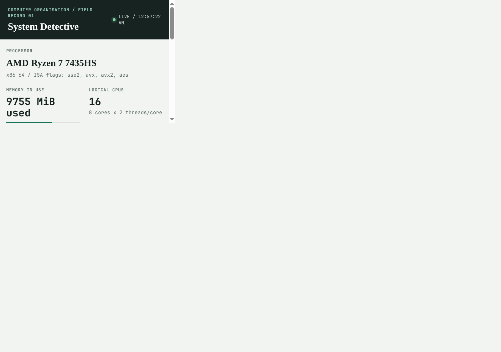
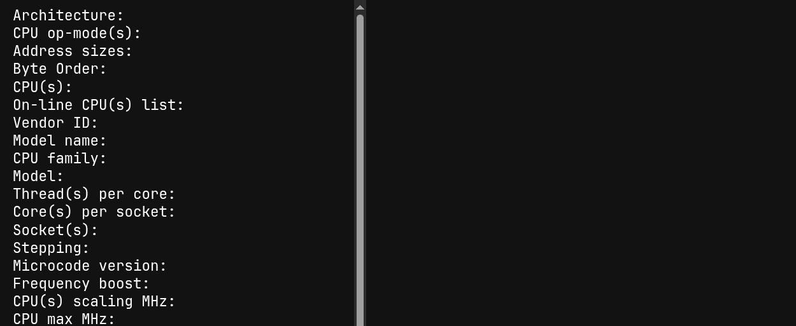
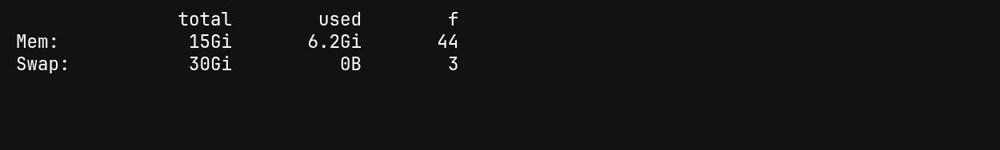
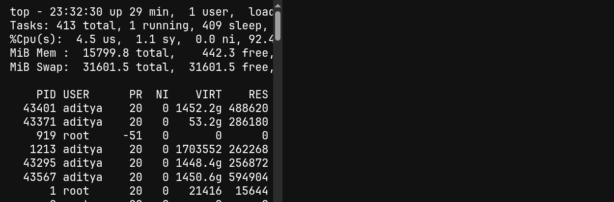
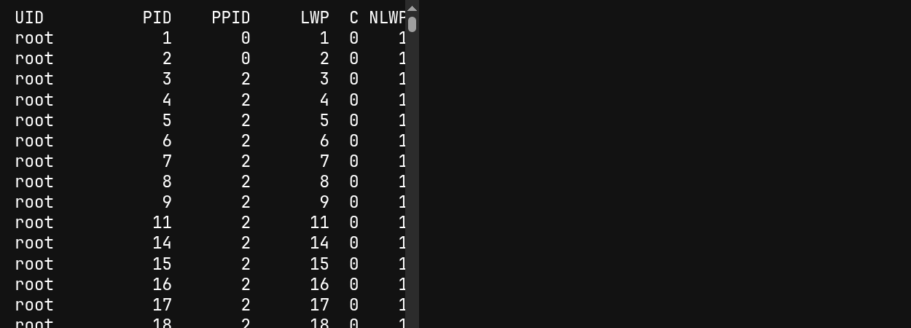
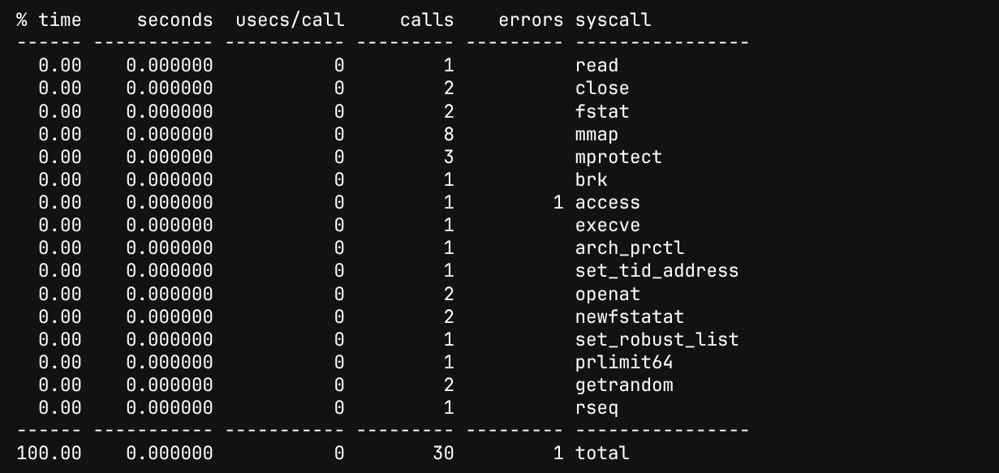

Roll number: ____________________ Name: ____________________
Machine: Omarchy Linux, x86_64 System commands: 27 September 2026 Locality/screenshots: 27-28 September 2026
The machine inspection was run directly on the Linux host, not in a simulated environment. The CPU report identifies an AMD Ryzen 7 7435HS with 8 cores and 16 logical CPUs. The reported instruction flags include SSE2, AVX, AVX2, and AES. `free -h` reported 15 GiB total memory, 6.2 GiB used, and 9.2 GiB available at the command-capture time.
The same initialized matrix was read once in each order. In C row-major layout, adjacent columns are contiguous. The column-major loop jumps 32 KiB between consecutive reads of a column. The program was compiled with GCC using -O2 -fno-tree-vectorize, disabling automatic loop vectorization for both orders. Both orders produced the same checksum. Across three paired runs, the median row-major time was 0.009116 s and the median column-major time was 0.823384 s, about 90.3x slower for the strided traversal on this run.
| Run | Order | Seconds | Checksum |
|---|---|---|---|
| 1 | row-major | 0.009115695 | 2097144125 |
| 1 | column-major | 0.824955201 | 2097144125 |
| 2 | column-major | 0.823384134 | 2097144125 |
| 2 | row-major | 0.008714712 | 2097144125 |
| 3 | row-major | 0.010915033 | 2097144125 |
| 3 | column-major | 0.804405443 | 2097144125 |
The dashboard refreshes CPU identification, memory availability, and the five highest `ps %CPU` rows every three seconds. Process states are displayed as reported by `ps`; the locality timings are read from the saved benchmark results and can be refreshed with the run button.

To reproduce the dashboard: compile `locality.c` with GCC, then run `/usr/bin/python dashboard/server.py` and open the local URL. No external services or hardcoded host readings are needed.




